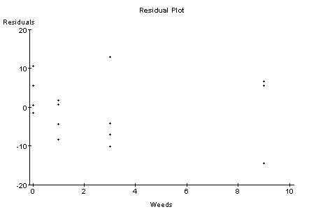

Note that all the material discussed in class (that is not part of CyberStats) is relevant for the quiz as well.
- Unit A-8 -- Correlation Describing Bivariate Data,
Exercises 1.8 - 1.16 (1/2 Point each)
- Unit D-2 -- Simple Linear Regression,
Exercises 1.1 - 1.3 (1/2 Point each)
- Unit D-3 -- Residuals,
Exercises 1.6 - 1.9, 1.15-1.16 (1/2 Point each)
| Weeds | Corn | 0 | 166.7 | 0 | 172.2 | 0 | 165.0 | 0 | 176.9 | 1 | 166.2 | 1 | 157.3 | 1 | 166.7 | 1 | 161.1 | 3 | 158.6 | 3 | 176.4 | 3 | 153.1 | 3 | 156.0 | 9 | 162.8 | 9 | 142.4 | 9 | 162.8 | 9 | 162.4 |
The output below has been obtained from WebStat for the data listed above. (5 Points)
Simple linear regression results: Independent variable: var1 Dependent variable: var2 Sample size: 16 Correlation coefficient: -0.4596 (See fitted line plot in Graphics Panel.) Estimate of sigma: 8.006156 Parameter Estimate Std. Err. DF Tstat Pval Intercept 166.48334 2.734623 14 60.879814 0 var1 -1.1102564 0.5733327 14 -1.9364958 0.0366

- a) Indicate the exact values for slope, y-intercept, the regression equation,
and the correlation coefficient obtained from WebStat. What is the explanatory
variable and what is the response variable? Comment on the relationship.
- b) Use this regression equation to predict the corn yield for 5, 10, and
100 weeds per meter. Which of these predictions are meaningful, which not?
Explain your answer.
- c) Below is a plot of the residuals versus Weeds. Does the residual
plot show any unusual pattern or do you think that, based on this
residual plot, our least squares regression line describes the
data reasonably well?


Below is a scatterplot of the same data. Our explanatory x-variable in this case is the percentage of urban census tracts and our response y-variable is the average concentration of hazardous air pollutants in each state. We are looking at data of 48 states plus Washington, D.C., i.e, n = 49. (5 Points)

- a) Fit a least squares (linear regression) line to the data
using WebStat. You can either try to copy/paste the data
into WebStat or load the data directly from the URL
http://www.math.usu.edu/~symanzik/teaching/2001_stat2000_2/hap_urban.dat
Note that Netscape may work better than Internet Explorer.
- b) What is a possible interpretation of the slope and y-intercept
you calculated in (a) above? Explain.
- c) Calculate Pearson's correlation coefficient r between x and y.
How can we interpret this value for our given data set?
- d) Based on your calculations in (a), what is the predicted
concentration of air pollutants for a region that has 0%, 40%,
60%, 100% of urban census tracts.
Which of these 4 predictions are more reliable,
which are less reliable? Why?

- Which of these residual plot(s) represent(s) satisfactory pattern(s)
that show that your selected statistical model (e.g., a
least squares regression line) describes the data reasonably well.
- For each of the residual plots that does not represent
a satisfactory pattern, indicate the type of problem that occurs
with the data in that particular case.